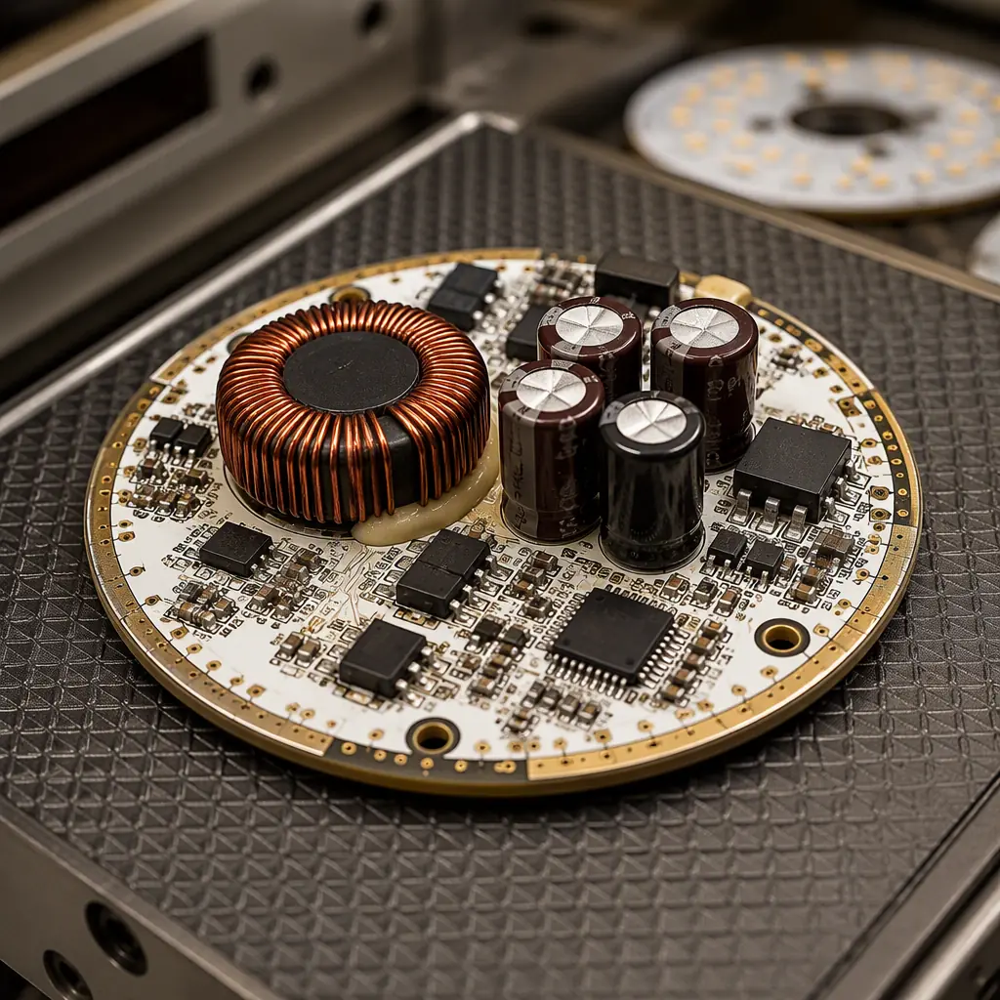
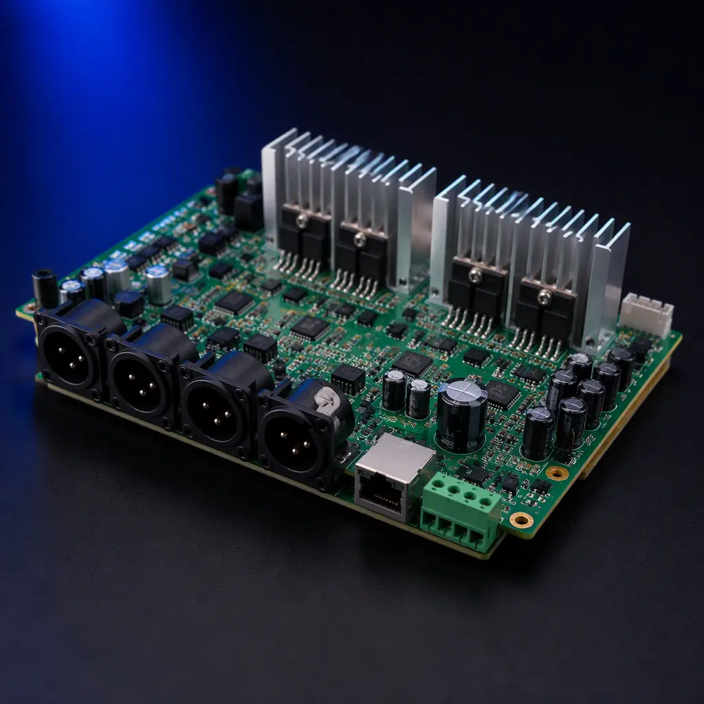
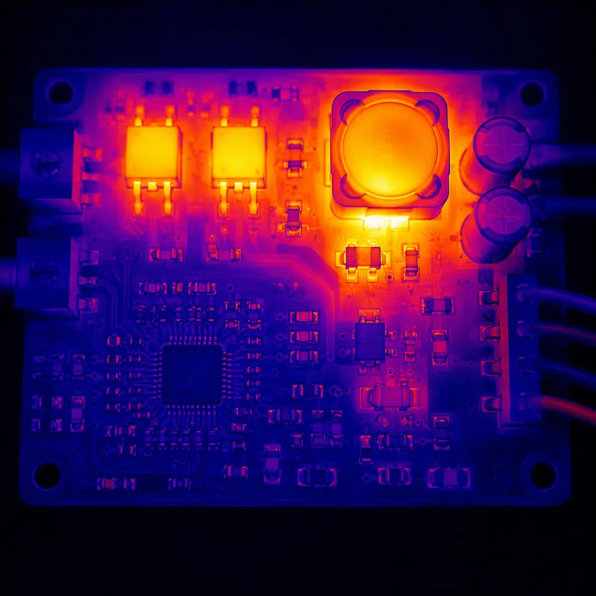

The lighting industry's transformation from fluorescent tubes with mechanical ballasts to IoT-connected LED luminaires with addressable control represents one of the largest electronic content expansions of any traditional industry. A 2026 commercial office luminaire contains more semiconductor content than a 2010 laptop motherboard — MCU, DC-DC converter, LED driver FETs, DALI-2 transceiver, Bluetooth Low Energy module, ambient light sensor, and PIR occupancy sensor — all on a single PCB constrained by the luminaire's mechanical form factor and thermal budget.
Our facility has manufactured lighting control PCBs for applications ranging from 5W Bluetooth Mesh downlights to 400W DALI-2 stadium floodlight drivers. The engineering challenge is consistent across all power levels: integrating power electronics, wireless RF, and digital control on a thermally constrained substrate without cross-interference between the high-current LED driver section and the noise-sensitive communication interfaces. This guide covers the three dominant smart lighting protocols, their PCB design implications, and the manufacturing processes that ensure first-pass compliance with IEC 62386 and FCC Part 15.

DALI-2 — The Commercial Standard for Addressable Lighting
DALI-2 (IEC 62386) is the dominant wired control protocol for commercial and architectural lighting, specified in over 80% of new office building tender documents in Europe. Unlike 0-10V analog dimming — which sends a unidirectional voltage level to a driver — DALI-2 is a bidirectional digital bus that supports individual luminaire addressing, group control, scene recall, and real-time fault reporting (lamp failure, driver temperature, emergency battery status). The bus operates at 16V with a 250mA current-limited supply, and data is Manchester-encoded at 1200 bps with a 22.5V logic high and 0V logic low — a scheme designed for noise immunity in electrically hostile ceiling plenum environments.
From a PCB design perspective, DALI-2 introduces three requirements that simple LED drivers don't face: a galvanically isolated DALI interface (typically using an optocoupler or digital isolator rated for 2.5kV), bus power extraction circuitry that draws ≤2mA in receive mode, and a microcontroller running the DALI stack with sufficient flash for the IEC 62386-102 mandatory command set. The isolation barrier between the DALI bus and the mains-powered LED driver section is the critical PCB layout constraint — the creepage distance across the isolation boundary must meet the end-product safety standard (typically 6mm for reinforced isolation at 230VAC). We use a physical PCB slot under the optocoupler to enforce the creepage path, a technique also used in high-voltage PCB design.
DALI Bus Power Supply — Extract Without Draining
The DALI bus provides 16VDC at up to 250mA total for all devices on the bus segment. Each control gear (driver) is allowed to draw a maximum of 2mA from the bus in receive mode — enough to power an MCU and DALI transceiver, but not enough to run wireless radios or sensor circuits. Designs that need additional functionality (BLE, sensors) must either include an auxiliary power supply from the mains side or use a supercapacitor-based energy buffering scheme that trickle-charges from the bus during idle periods. Our reference DALI-2 driver design uses a 2.5V supercapacitor bank that charges from the bus over 30 seconds at power-up, then supplies burst current for BLE advertising at 1-2 minute intervals. This approach keeps bus current draw within the 2mA limit while supporting wireless commissioning — a requirement increasingly specified in DALI-2 + D4i luminaires.
DMX512/RDM — The Entertainment and Architectural Workhorse
DMX512 (ANSI E1.11) originated in theater lighting control and has expanded into architectural facade lighting, RGBW pixel mapping, and large-scale dynamic installations. Unlike DALI's bus topology, DMX512 uses a daisy-chain topology with RS-485 differential signaling at 250 kbps — fast enough to update 512 channels (170 RGB fixtures) at 44 Hz refresh rate. The RDM (Remote Device Management) extension, standardized as ANSI E1.20, adds bidirectional communication for device discovery, status monitoring, and remote configuration over the same RS-485 physical layer.
DMX512 PCB design is fundamentally an RS-485 transceiver design with one critical addition: the DMX512 standard requires 120Ω termination at the last device on the chain, but the termination must be switchable or automatic — not hard-wired. Designs that permanently terminate every device create bus loading issues when 20+ devices are daisy-chained. The standard approach is a DIP switch or jumper for manual termination, but modern designs increasingly use auto-termination circuits that sense whether a downstream device is connected and enable termination only when the device is at the end of the chain. The RS-485 transceiver itself must withstand the common-mode voltage shifts that occur in long cable runs through electrically noisy environments — look for transceivers rated for ±25V common-mode range with 15kV ESD protection on the bus pins.

Wireless Mesh Protocols — Bluetooth Mesh, Zigbee, and Thread
Wireless lighting control eliminates the control wiring cost — which can represent 30-40% of total installation cost in a commercial building. The three competing wireless mesh protocols each target different segments: Bluetooth Mesh dominates commercial office lighting (driven by smartphone commissioning and Silicon Labs EFR32 ecosystem), Zigbee dominates residential and hospitality (driven by Philips Hue and Amazon Echo integration), and Thread is emerging in building automation through the Matter standard. From a PCB perspective, all three require an RF section on the same board as a switch-mode LED driver — the EMI challenge that defines smart lighting PCB design.
RF Isolation from Switching Noise — The Dominant Design Constraint
An LED driver switching at 60-130 kHz with 200-400V drain voltage swing on the MOSFET generates broadband harmonic noise well into the 2.4 GHz ISM band where Bluetooth and Zigbee operate. This is not a theoretical concern — we've measured 15-20 dB degradation in BLE receiver sensitivity on prototype boards where the PCB antenna was placed within 15mm of the driver inductor. The mitigation strategy has four components: (a) physical separation — minimum 25mm between the switching inductor/ MOSFET and the antenna keep-out zone; (b) ground partitioning — a continuous ground plane under the RF section with a single-point bridge to the power ground; (c) shielding — a surface-mount shield can over the RF module if physical separation is constrained by form factor; (d) spread-spectrum switching — configuring the LED driver controller for frequency dithering spreads the switching noise across a wider bandwidth, reducing peak noise at any single frequency. For complete EMI design methodology, see our EMI/EMC design guide.
Antenna Placement — Don't Let the Aluminum Housing Kill Your Signal
LED luminaires are typically housed in aluminum extrusions or die-cast enclosures — which act as Faraday cages at 2.4 GHz. A PCB antenna placed inside a fully enclosed aluminum housing will see 20-30 dB of attenuation, reducing effective range from 30 meters to 3 meters. Solutions: (a) external antenna with U.FL connector and a coaxial pigtail to a plastic window in the housing; (b) PCB antenna positioned at the edge of the board with a ground cutout that aligns with a plastic end-cap; (c) for fully sealed outdoor luminaires, a ceramic patch antenna mounted on the driver PCB with a plastic radome window in the housing. The antenna solution must be specified during the PCB design phase — retrofitting an antenna to a board designed for internal placement is usually impossible without a full respin. For wireless power applications in lighting, see our wireless power transfer guide.
LED Driver Topology — Constant Current, Power Factor, and Dimming
The LED driver section of a smart lighting PCB does three things: converts AC mains to a regulated DC current, maintains power factor above 0.9 (mandatory for luminaires above 25W under IEC 61000-3-2), and responds to dimming commands from the control interface (DALI, DMX, or wireless) with smooth, flicker-free dimming down to 0.1% of full output. The topology choice — flyback, buck-boost, or LLC resonant — depends on power level, dimming depth requirement, and cost sensitivity.
| Topology | Power Range | Dimming Depth | Relative Cost | Best Application |
|---|---|---|---|---|
| Single-Stage Flyback + PFC | 5-75W | 5-100% | $ | Downlights, track lights, small area luminaires |
| Two-Stage Boost PFC + Flyback | 40-150W | 1-100% | $$ | Troffer, linear, and panel luminaires |
| LLC Resonant + Buck CC | 75-400W | 0.1-100% | $$$ | High-bay, stadium, and area floodlights |
| Buck-Boost (DC Input) | 10-100W | 1-100% | $ | Emergency lighting, PoE lighting (48VDC bus) |
The interaction between the LED driver and the smart control section creates the most common design fault we see: dimming-induced MCU reset. When the LED driver dims below 5%, the output current ripple increases — and if the MCU's 3.3V LDO is powered from the same rectified DC bus without adequate filtering, the ripple couples through the LDO and browns out the MCU. The fix is a dedicated LDO input filter (100µF electrolytic + 10µF ceramic + ferrite bead) and a supervisor IC with a 2.7V threshold that holds the MCU in reset during deep dimming transients. For thermal management of the LED driver section, including MCPCB substrate selection, see our LED PCB manufacturing guide and metal core PCB guide.

PCB Material Selection for Lighting Applications
Lighting PCBs operate in uniquely harsh thermal environments. The LED junction temperature can reach 85-105°C, and the aluminum housing that dissipates that heat also conducts it to the driver PCB. Standard FR-4 with a Tg of 130°C is adequate for driver sections below 40W, but designs above 60W or with densely packed components should specify high-Tg FR-4 (Tg ≥170°C) or metal-core PCB (MCPCB) for the LED mounting section. For dual-section designs — MCPCB for the LED array, FR-4 for the driver — the board-to-board interconnection must handle the differential thermal expansion: a 100°C temperature rise on an aluminum substrate produces approximately 0.25mm of linear expansion per 100mm of board length.
MCPCB-to-FR4 Interconnection — Thermal Stress Relief
The junction between the aluminum-core LED board and the FR-4 driver board is the highest-stress mechanical point in the assembly. Rigid soldered connections (pin headers) will fatigue and crack within 500-1000 thermal cycles as the aluminum expands and contracts relative to the FR-4. The correct interconnection methods are: flexible PCB jumper (0.2mm polyimide with 1oz copper, minimum 10mm length for strain relief), stranded wire with silicone insulation (rated 200°C), or spring-loaded pogo-pin connectors that accommodate thermal displacement. For flex PCB reliability, see our flex PCB design guide.
IEC 62386 Compliance — What Manufacturers Must Verify
IEC 62386 is not a single standard but a family of 30+ parts covering different device types, control gear functions, and bus power supplies. For a DALI-2 LED driver (control gear type 6 per IEC 62386-207), the mandatory compliance tests include: bus power consumption ≤2mA, response to 24-bit forward frames within 22.5ms, correct handling of 15V-20.5V bus voltage range, arc power reporting accuracy ±5%, and failure status reporting (lamp failure, thermal shutdown, load change detection). Testing requires a DALI-2 certified test sequencer — a USB-to-DALI interface with protocol conformance test software (available from DiiA member test houses). PCB designs that pass functional testing but fail conformance testing almost always fail on timing: the MCU's interrupt latency for DALI frame decoding exceeds the 9.17ms half-bit period tolerance at 1200 bps.
Design Rule: The MCU pin receiving the DALI bus signal must be configured as an edge-triggered interrupt with interrupt priority set above all other peripherals except the safety watchdog. If the MCU is also running a BLE stack (which has its own real-time constraints in the 625µs connection interval), the DALI interrupt must preempt the BLE stack. This means the MCU's NVIC (nested vector interrupt controller) must support preemptive interrupts — a feature present on ARM Cortex-M3/M4 but not on lower-cost M0/M0+ cores.
Smart Lighting PCB Manufacturing at Huaxing PCBA
Smart lighting PCBs demand manufacturing capabilities that span three traditionally separate domains: power electronics assembly (heavy copper, large magnetics, thermal management), RF assembly (impedance-controlled traces, RF connector placement, shield can attachment), and mixed-signal assembly (fine-pitch MCUs, sensors, optocouplers). The manufacturing line must handle all three on a single board without compromising any domain's quality requirement.
Our SMT lines for lighting control boards run a specific process: dual-side assembly with selective soldering for through-hole magnetics and connectors, nitrogen reflow for improved wetting on heavy copper LED driver sections, 100% AOI on both sides with separate inspection programs for the power section (looking for insufficient solder on large thermal pads) and the digital section (looking for bridging on 0.5mm pitch QFN packages). Post-assembly, every board undergoes a 4-hour burn-in test at 85°C ambient while cycling the LED output from 100% to 1% dimming at 5-second intervals — this catches the infant mortality failures that would otherwise surface during customer commissioning. For the complete assembly process methodology, see our PCB assembly process guide and our guide on burn-in and ESS testing.
Whether you're developing a DALI-2 downlight driver, a DMX512 architectural facade controller, or a Bluetooth Mesh luminaire with integrated sensors, our engineering team can support your PCB manufacturing from prototype through mass production. Contact us with your design files for a DFM review and production quote — typical turnaround is 24 hours with a free thermal simulation report for lighting applications above 75W.